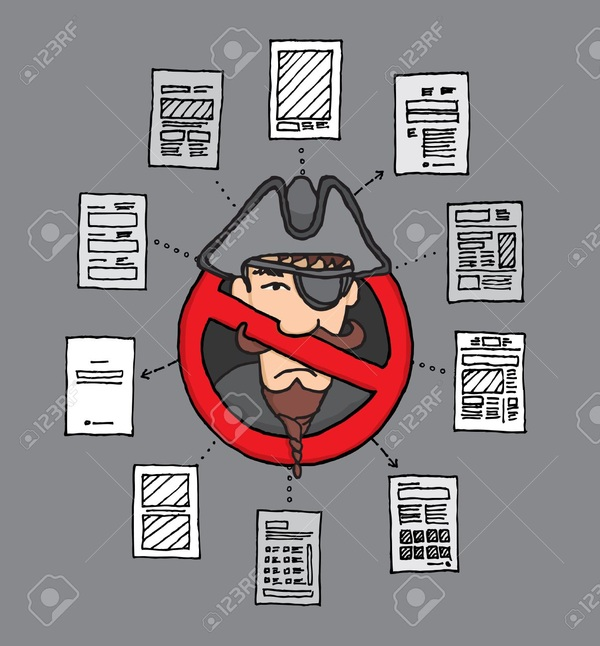
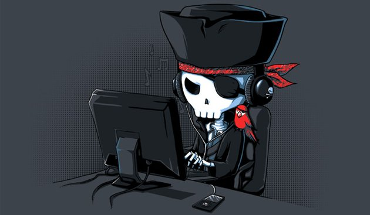
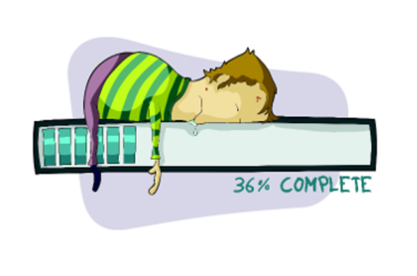
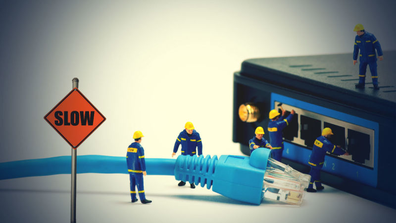
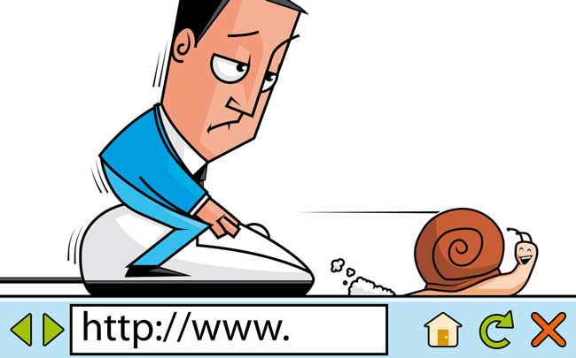

Download Services
Though these services have a lot of advantages, there a few disadvantages. The main disadvantage would obviously be the cost issues the user would face. Not only should the user pay to buy/rent these services, but also to the network provider for downloading data. Plus, faster internet with a better bandwidth costs more money.
Sometimes, after downloading, the user may find that the product's audio/video quality is bad. They might want to return them, but may not be able to. Moreover, some companies do not allow their users to have their products forever. They may only allow to rent them.
Another major disadvantage of users being able to download whatever games, movies or music they want is
priacy!
This however, makes the companies more concerned than the users. Users can download all the data from their peers easily without having to buy or rent the software. Many short films and other actions like giving a license or a key for the product have been taken in order to prevent piracy.


Moreover, if many people are downloading at the same time, the service provided by the network would become slower because of the increased busyness. The internet connection would become slower and buffering would take a longer time. The user would end up getting frustrated because of this.


